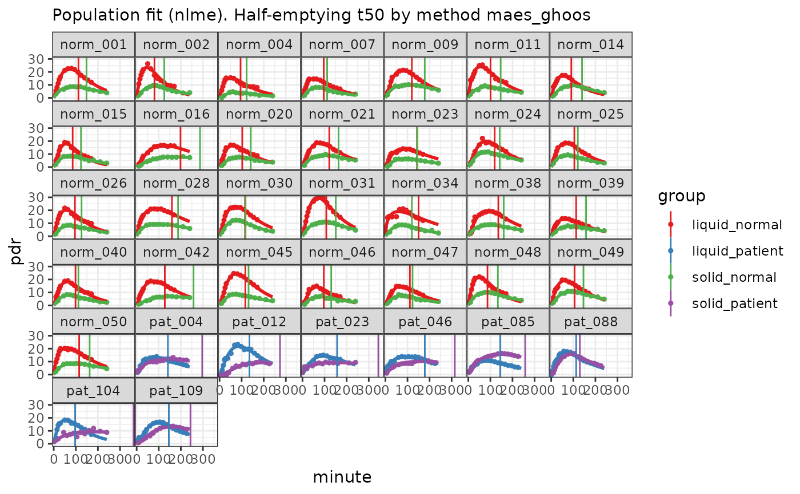

Get subset of clinical data with records for solid and liquid meals of the same patient
Value
A `tibble` of records from patients and normals with two meals, possibly resampled, with columns `patient_id`, `group` (`liquid_normal, solid_normal, solid_patient, liquid_patient`) and `pdr`
Examples
fit = usz_13c_sol_liq() |>
nlme_fit()
coef(fit) |>
dplyr::filter(parameter == "t50", method == "maes_ghoos")
#> # A tibble: 74 × 5
#> patient_id group parameter method value
#> <chr> <chr> <chr> <chr> <dbl>
#> 1 norm_001 liquid_normal t50 maes_ghoos 112.
#> 2 norm_001 solid_normal t50 maes_ghoos 148.
#> 3 norm_002 liquid_normal t50 maes_ghoos 80.6
#> 4 norm_002 solid_normal t50 maes_ghoos 125.
#> 5 norm_004 liquid_normal t50 maes_ghoos 94.9
#> 6 norm_004 solid_normal t50 maes_ghoos 123.
#> 7 norm_007 liquid_normal t50 maes_ghoos 96.2
#> 8 norm_007 solid_normal t50 maes_ghoos 112.
#> 9 norm_009 liquid_normal t50 maes_ghoos 120.
#> 10 norm_009 solid_normal t50 maes_ghoos 178.
#> # ℹ 64 more rows
fit |>
plot()
